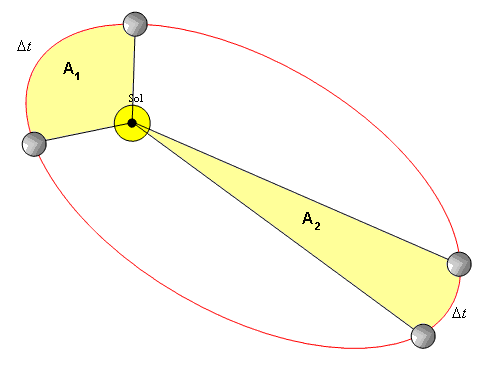

Física
Física é a ciência que estuda a natureza em seus aspectos gerais, tendo em vista seu funcionamento e suas consequências, buscando propriedades e explicações para seus fenômenos.
Dinâmica I
É o estudo dos corpós em movimento e as forças que atuam sobre elas, buscando seu completo entendimento. Um exemplo disso é oque entedemos como gravidade que nada mais é a ação de uma força sobre nossos corpos.
Leis de Newton
Newton dedicou sua vida ao entendimento das forças que agem sobre nosso universo, tendo estudos das coisas mais simples como a força exercida por nosso corpo sobre os objetos, até o entendimento das forças exercidas pelos corpos celestes. Porem ele deixou uma herança incrivel para o estudo da física, suas três leis.
1° Lei de Newton:
Essa lei tambem é conhecida como princípio da inércia e se trata do estado que o corpo fica quando não possui forças agindo sobre si, segundo Newton, na ausência de forças, um objeto em reepouso continua em repouso e um objeto em movimento move-se em linha reta, com velocidade constante.
2° Lei de Newton:
Atraves de diversos testes Newton chegou a seguinte conclusão, a força exercida sobre um corpo é sempre proporcional ao produto de sua aceleração por sua massa
3° Lei de Newton:
Comunmente conhecida como ação e reação, essa lei se trata da ideia da consequência de uma força. Quando um objeto A exerce uma força sobre um objeto B, este também exerce sobre o A uma força com o mesmo modulo, mesmo sentido porem com uma direção contraria.
Atrito
Se pararmos pra pensar o porque dos objetos pararem de se movimentar não faria nenhum sentido, afinal um objeto só pode parar de se movimentar se uma força contraria ao movimento for aplicada ao objeto, ai entra o atrito. O atrito é uma força proporcional a força normal, sendo originada pelo contato entre superfícies, que possui mesmo sentido que o movimento porem com direção contraria. Contudo existem dois tipos de atrito dependendo da movimentação do objeto.
Atrito estático:
A força de atrito estático atua sobre um objeto que não está em movimento. essa força permanece com mesmo modulo que a da força aplicada, até chegar no que chamamos de força de atrito estático máxima que pode ser calculada da seguinte forma.
Atrito cinético:
A força de atrito cinético atua sobre um objeto que está em movimento, tendo modulo constante.
Dinámica II
Apartir de agora vamos falar um pouco sobre gravidade oque é como age sobre os objetos e como podemos perceber
Lançamento de vertical
Imagine um canhão fazendo um angulo de 90° com o chão, o projetil lançado teoricamente subiria até uma altura maxima e voltaria, certo, então agora vamos pensar nas forças que atuam sobre ele, primeiros temoos a gravidade que obviamente seria contraria ao movimento, logo (-g). Com isso podemos tambem concluir que tanto no início quanto no final do movimento, o projetil tera sua velocidade máxima e finalmente chegamos a ultima conclusão, no ponto de inversão ou na altura máxima o projetil tera sua velocidade igual a 0. sendo assim o movimento se trata de um MRUV (Movimento retilíneo uniformemente variado).
Lançamento horizontal
Apartir de agora temos que botar em pratica o principio da independência de movimentos. No movimento horizontal o projetil descreve uma trajetoria que naverdade nada mais é que uma resultante da força aplicada sobre o projetil e da força da gravidade. logo não ha nehuma força contraria ao movimento, sendo assim o movimento horizontal possui modulo constante e o vertical inicia com o modulo igual 0 e possui uma aceleração que nada mais é que a gravidade. Então podemos concluir que a unica coisa que possibilita uma relação entre as duas forças é o tempo.
Lançamento obliquo
Trazendo o mesmo conceito do lençamento horizontal, as forças devem ser analisadas separadamente. A força horizontal permanece constante até o final do movimento, já a força vertical inicia com seu maximo e é retardada até chegar a 0 na altura máxima e por fim acelera até possuir seu maximo novamente ates de atingir a altura correspondente ao nivel de seu lançamento. Da mesma forma podemos contatar que a unica coisa que liga as forças é o tempo.
Gravitação universal
Esse estudo teve seu inicio com o auxilio de dois estudiosos, Johannes Kepler e Isaac Newton. Devido a eles começamos a entender como os corpos celestes funcionam e sua ação no universo. Vamos ver suas contribuições para o estudo da física.
1° Lei de Kepler
Tambem conhecida como lei das obitas ela afirma o seguinte, Qulaquer planeta gira em torno do Sol descrevendo uma órbita elíptica, tendo o sol em um de seus focos
2° Lei de Kepler
É chamada de lei das areas e consirte na seguinte afirmação, A reta que une um platneta ao Sol varre uma area igual em tempos iguais.
3° Lei de Kepler
Essa lei é uma relação entre o periodo de revolução e a distancia entre os corpos celestes, sendo dada da seguinte forma:
Lei da Gravitação Universal
Mediante os estudos de Kepler Newton percebeu que em meio a orbita de um planeta ou de qualquer outro objeto, existe a ação de uma força que poderia ser demonstrada. Mediante a esse fato ele chegou à seguinte conclusão "Dois corpos atraem-se com força proporcional às suas massas e inversamente proporcional ao quadrado da distância que separa seus centros de gravidade."